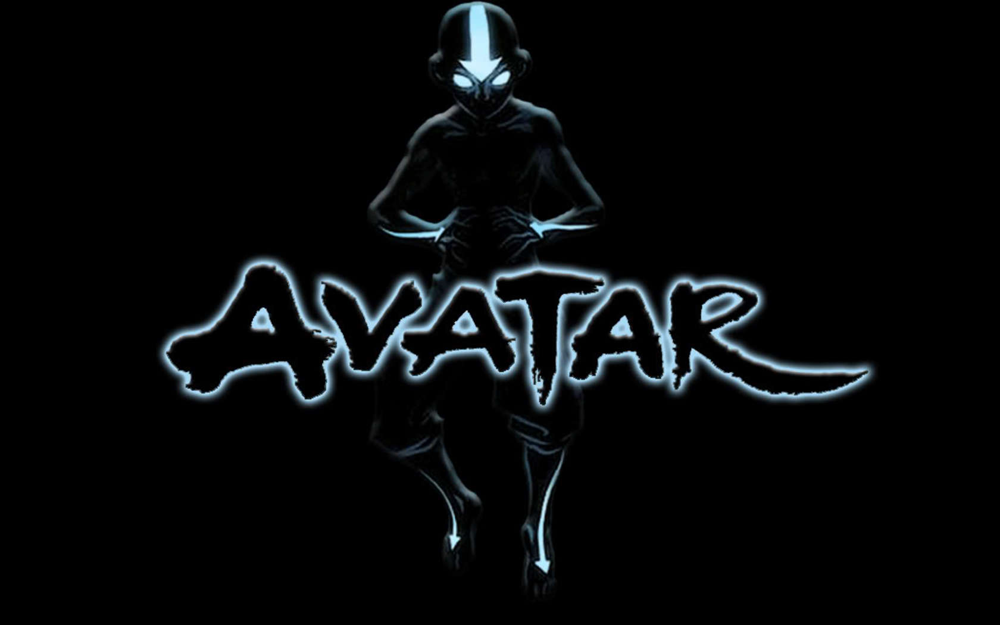

Suggestions
- Avatar: The Last Airbender Bryan Cranston played the role of Walter in Breaking Bad. He is also known for playing Hal in Malcom in the Middle. 10.0
- Sherlock Aaron Paul played the role of Jesse in Breaking Bad. He also featured in the "Need For Speed" Movie. 9.5
- Twin Peaks Bob Odinkrik played the role of Saul in Breaking Bad. Due to public fondness for the character, Bob stars in his own show now, called "Better Call Saul". 9.49
Previously Rated
- Avatar: The Last Airbender Bryan Cranston played the role of Walter in Breaking Bad. He is also known for playing Hal in Malcom in the Middle. 10.0
- Sherlock Aaron Paul played the role of Jesse in Breaking Bad. He also featured in the "Need For Speed" Movie. 9.5
- Twin Peaks Bob Odinkrik played the role of Saul in Breaking Bad. Due to public fondness for the character, Bob stars in his own show now, called "Better Call Saul". 9.49
Recommended
